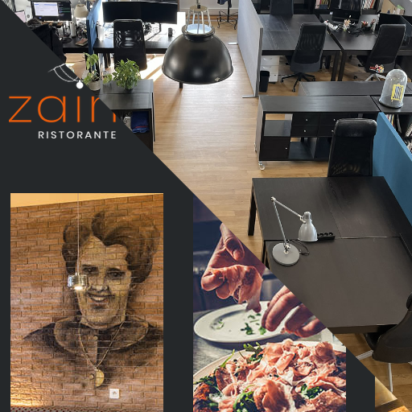

Expériences
Partons en exploration dans mes expériences passées.
En effet, j'ai été attiré très jeune par le domaine de la programmation.
Cette catégorie est triée du plus récent au plus ancien.
DÉVELOPPEUR FULL STACK 2025 (2mois)

J'ai eu pour mission de développer une webapp de restauration pour l'association
GAIA 74 pendant ce stage.
J'ai été sur le terrain pour rencontrer les utilisateurs et acteurs du furtur logiciel.
Sur cette base, j'ai conçu l'application de réservation et de gestion des repas pour la cuisine du CHRS La
Cordée.
J'ai aussi participé à la vie de l'association (AG, journée associative).
Compétences travaillées :
- Écoute active
- Conversion des demandes en solutions
- Front end (HTML/CSS/JS)
- Back end (Express.js/Batch scripting/BDD en .json)
Liens :
- Lien de la
webapp(inactive)
- GitHub du projet
- Site de l'association
MONTE-OU-TOMBE 2023 (2semaines)

"MonteOuTombe" est un plateformer 2D où vous incarnez un petit slime bleu qui cherche à sortir des
entrailles de la Terre.
J'ai réalisé un stage d'initiation au visual scripting avec Unity à Paris durant l'été.
Pendant 2 semaines un étudiant d'ISART m'a enseigné les bases d'un plateformer 2D.
Au cours de ce stage, des corruptions de fichiers m'ont appris à améliorer mon processus de sauvegarde.
J'ai pu y parvenir en travaillant sur mon temps libre.
En résulte ce petit jeu dont je reste encore fier aujourd'hui.
Compétences travaillées :
- Résilience
- Unity 2D
- Visual Scripting
Liens :
- GitHub
du jeu
GRAPHISME WEB 2022 (2semaines)

Pour ma première expérience professionnelle, je me suis dirigé vers le monde des sites web.
Lors de ce stage, j'ai découvert comment travaille une chargée de communication, mais aussi le principe du
coworking.
De la rencontre du client au produit final, j'ai eu la chance de suivre tout le processus et d'y
participer.
Compétences travaillées :
- Adaptabilité
- Curiosité
- Initiation InDesign
Liens :
- Site de l'entreprise
Et bientôt d'autres !